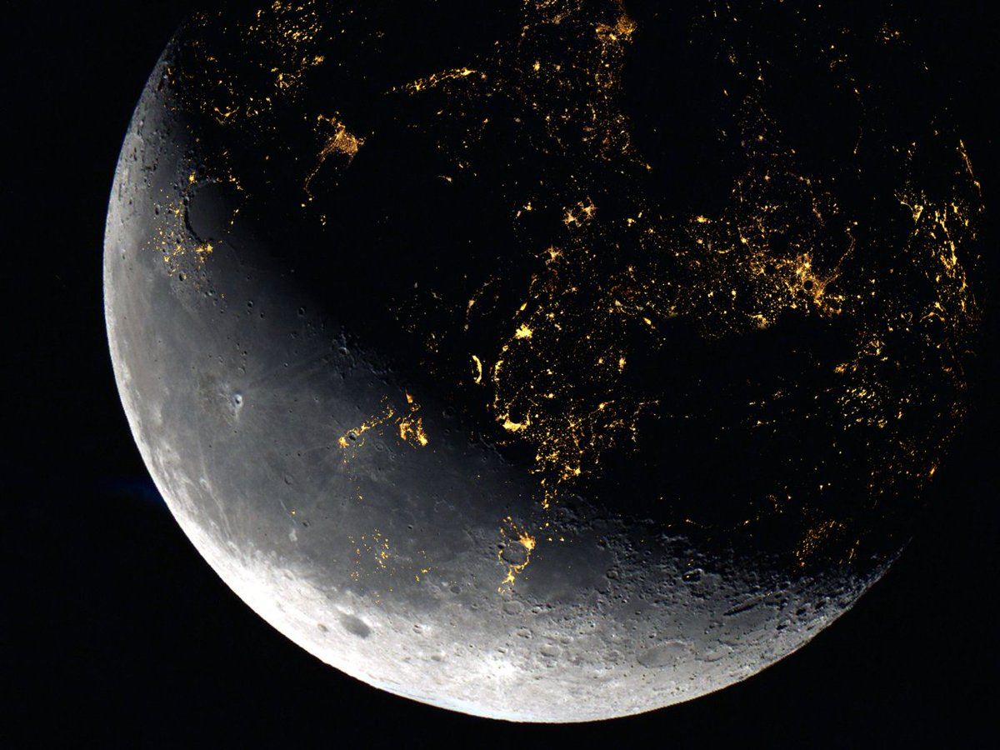

See the sights with SoLiner
Earth
The Cradle of humanity, our only home for so long. Earth is a scientific
marvel, a true rarity. The beacon of life in an otherwise lifeless
galaxy.
Whether you are a resident of Earth or wishing to visit, we will
facilitate your needs, OHS' and in-atmosphere flights are available.
Luna
Humanity's neighbour and protector, since the dawn of humanity itself,
we have stared up at the little white rock with such curiosity and
wonder.
Now it's the 24th Century and our dear friend Luna is finally another
home for us.
We offer hotel stays and orbital flights around Luna regularly.


Mars
The red planet. Our first extra-terrestrial colony, in the early 21st
Century, Mars was the focus of so many great minds, minds that knew Mars
was our biggest opportunity yet.
In 2048, humans first set foot on the dusty red rock, not long
afterwards, expansive colonies spread throughout it's many caverns and
mountains.
We offer flights, OHS stays and tours of Olympus Mons.
Jupiter
The system brute, our bodyguard for four billion years, soaking in
Earth-bound asteroids and protecting us from disaster.
The largest planet in our system, ravaged by storms but blessed with
otherworldly beauty, Jupiter is host to over a hundred moons, big and
small, with it's impressive gravitational field.
A breakthrough in modern habitat living was the high-Jovian atmospheric
cloud cities, hovering above the mass of storms and harsh winds, our
habitats remain one of the most sought after holiday experiences in the
system.

Ganymede
Jupiter's little brother, the biggest moon in the system, bigger than
Mercury and Pluto. If Ganymede were orbiting the sun, it would be
considered a planet.
The Jovian probe in the mid 2030s uncovered the wonders of this moon,
with it's caverns of ice, cascades of shimmering diamonds and stunning
sights of Jupiter, Ganymede is certainly an underrated destination, one
that we thoroughly recommend.
Saturn
Another gas giant, a truly beautiful planet, with it's distinctive ring
and countless moons, including Titan. Saturn is host to a stunning ring,
which holds dozens of our orbital hotels.
Imagine it, waking up and looking out at the staggering imagery of
Saturn and its' ring.